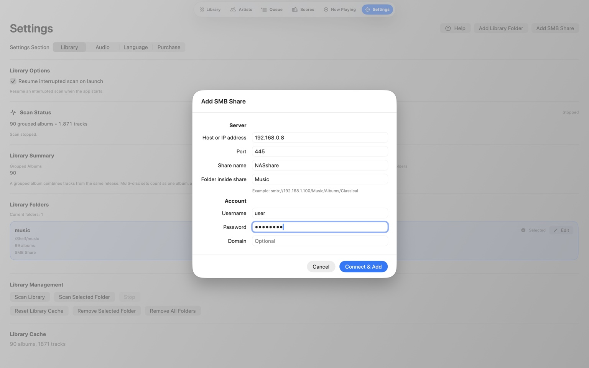

SMB Direct
Your music,
right where you left it.
Connect Audio Lounge directly to the NAS or SMB share where your library already lives.
No Finder mount is required on Mac, and no Files app mount is required on iPad. Once the share is configured, Audio Lounge connects to it directly.
Before Audio Lounge
Make sure the NAS is ready for SMB.
Audio Lounge can connect directly to a NAS, but the NAS still needs to offer the music folder over SMB first. For most home NAS systems, this is a one-time setup.
You only need four things on the NAS side:
- SMB / File Sharing is enabled. On many NAS systems this may be called SMB, File Services, Windows File Sharing, or simply File Sharing.
- Your music is inside a shared folder. For example, a shared folder named
Music. - Your NAS account can read that shared folder. Your normal NAS username is fine; a separate Audio Lounge account is not required.
- You know the NAS hostname or IP address. For example
192.168.1.20.
If another computer can already open this music share using SMB, your NAS is probably ready. Audio Lounge does not require you to mount the share in Finder first.
On Synology, QNAP, TrueNAS, and most other home NAS systems, look for settings named SMB, File Services, Windows File Sharing, or Shared Folders. The exact menu name varies by NAS brand.
Mac & iPad
Add the share in Audio Lounge.

Open Audio Lounge → Settings → SMB Shares → Add SMB Share. Then fill in the fields below.
Share and Folder are not the same thing.
Share is the network share name published by your NAS. It is the first name that appears immediately after the NAS address. Folder is any subfolder inside that Share.
//192.168.1.20/NAShare/Music/Classical
- Host / IP =
192.168.1.20 - Share =
NAShare - Folder =
Music/Classical
Easy rule: Share is the name immediately after the NAS address. Folder is everything after the Share.
Two common examples
If your NAS directly shares a folder named Music:
//192.168.1.20/Music
- Share =
Music - Folder = leave blank
If your music library is inside a subfolder of that share:
//192.168.1.20/Music/HiRes
- Share =
Music - Folder =
HiRes
The NAS address, such as 192.168.1.20. You can also use a local hostname if your network resolves it reliably.
Leave this at 445 unless your NAS is configured to use something different.
The SMB share name published by the NAS. It is the first name immediately after the NAS address. For //192.168.1.20/NAShare/Music, the Share is NAShare.
Optional. This is the path inside the Share. For //192.168.1.20/NAShare/Music/Classical, the Folder is Music/Classical.
The NAS account that has permission to read the share.
The password for that NAS account.
Most home NAS users should leave this blank. It is mainly for managed Windows/domain environments.
Remember: Audio Lounge needs the SMB Share name, not the name of any arbitrary folder on the NAS. A normal folder only belongs in the Folder field if it sits inside the published Share.
Troubleshooting
If Audio Lounge cannot connect.
Confirm the NAS is powered on, SMB is enabled, and the Mac or iPad is on the same local network.
Recheck the NAS username and password, and make sure that account has permission to read the shared folder.
Check that Share is the shared-folder name—not the whole path. Put subfolders in the Folder field instead.
Try the NAS IP address instead. You can usually find it in the NAS app or your router.